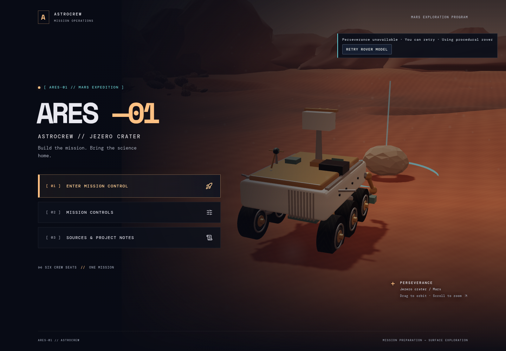
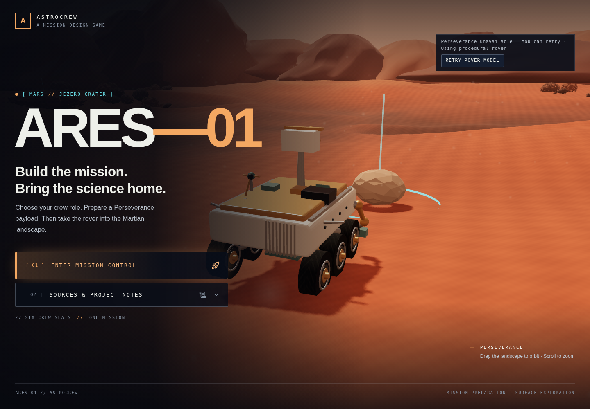
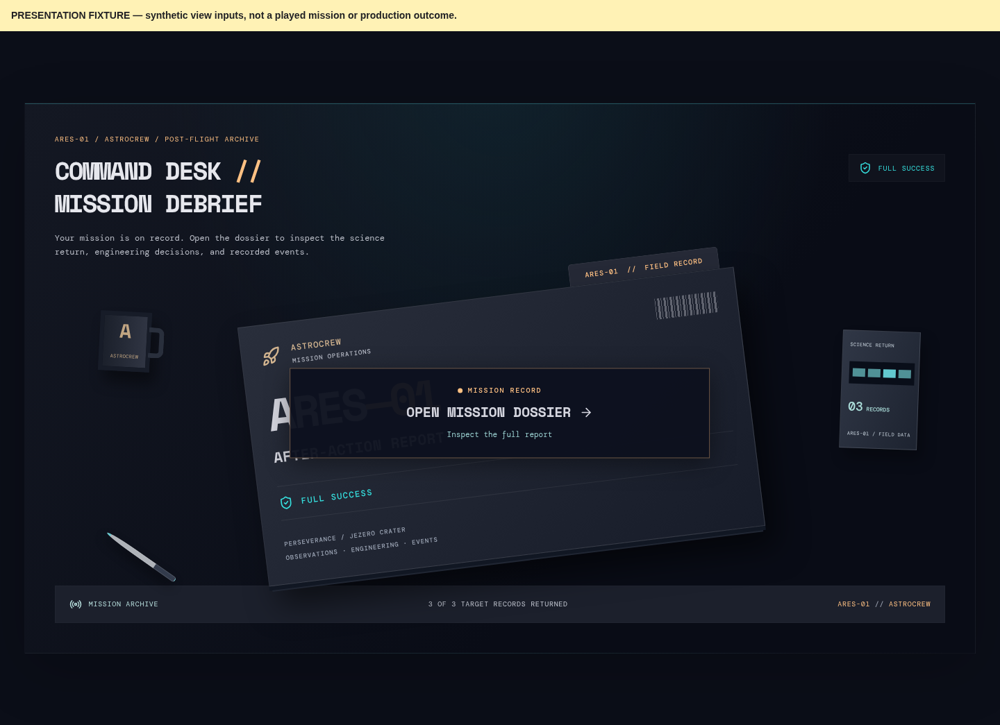
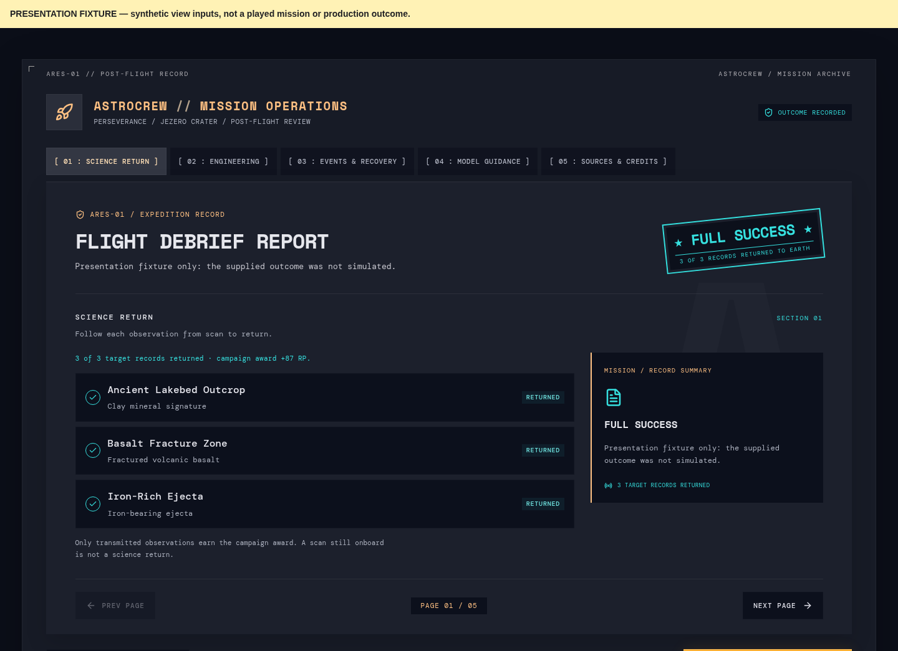
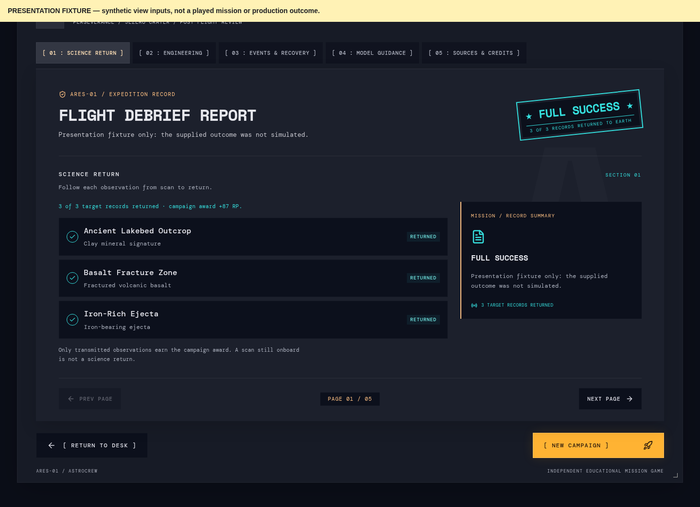
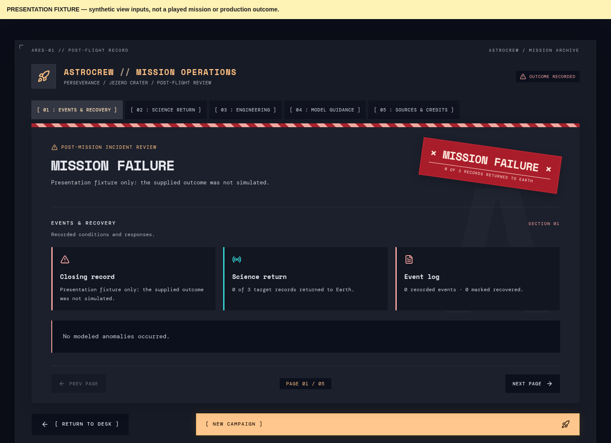
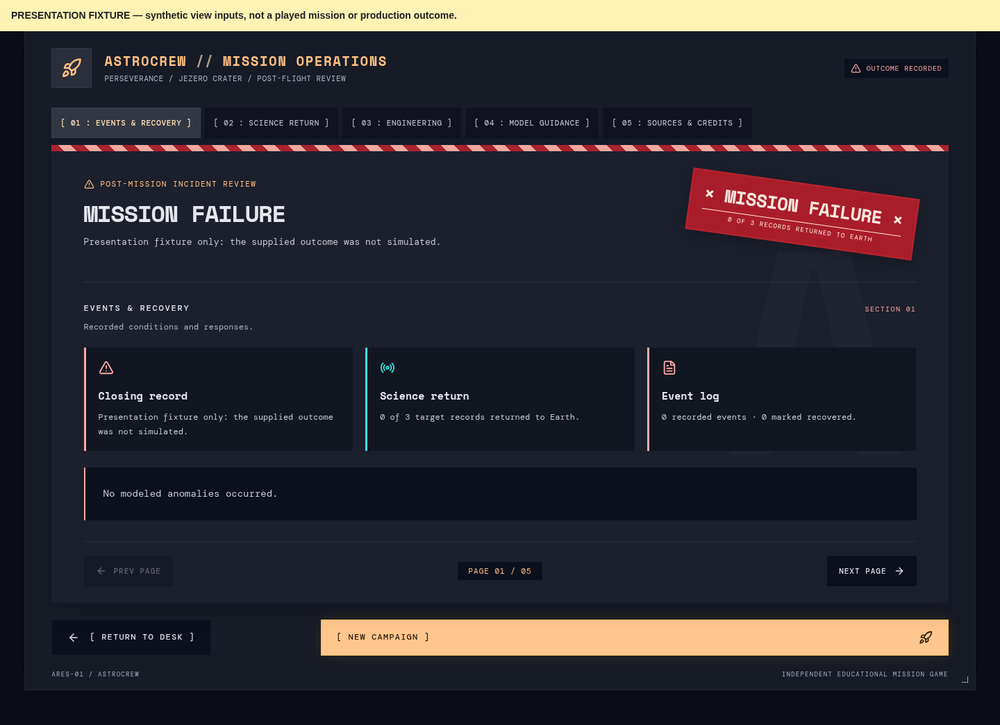

ARES-01 — redesign previewARES-01 // ASTROCREWReference-led UI rebuild
Cinematic menu, physical debrief desk, and distinct success / incident reports.
Actual browser captures. Desk and report inputs are presentation fixtures, labeled in each capture. Welcome uses the existing procedural rover because the uploaded project omitted the original models. No reference artwork is bundled.
Cinematic welcome

Rendered at the selected width. Reports scroll normally when their content exceeds the viewport.Previous welcome for comparison

Interactive debrief desk

Rendered at the selected width. Reports scroll normally when their content exceeds the viewport.Success dossier

Rendered at the selected width. Reports scroll normally when their content exceeds the viewport.Bottom of document / navigation and actions

Incident dossier

Rendered at the selected width. Reports scroll normally when their content exceeds the viewport.Bottom of document / navigation and actions
